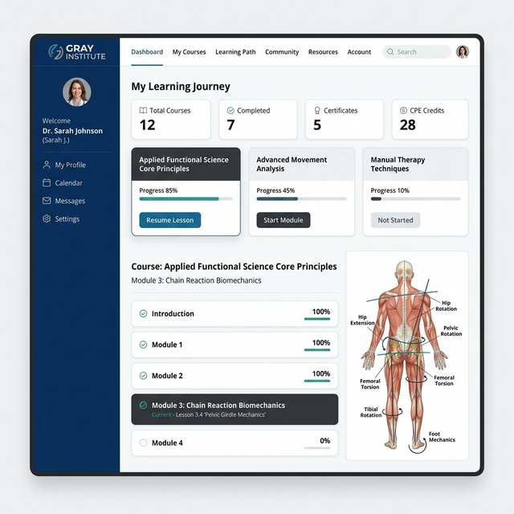
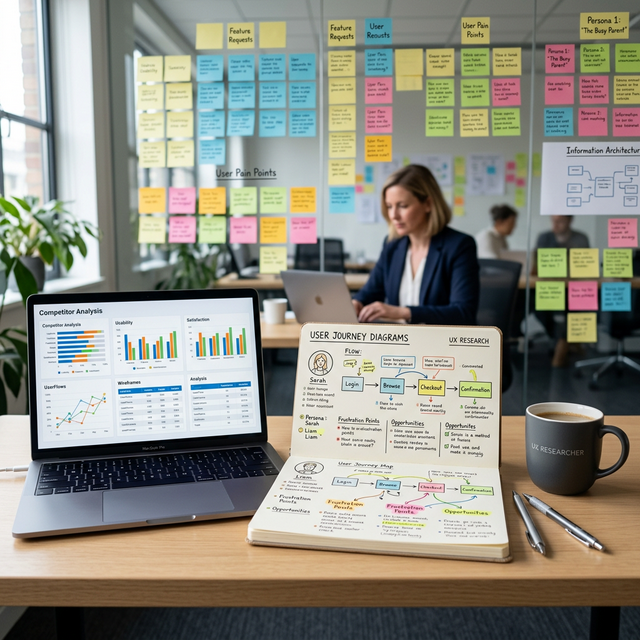
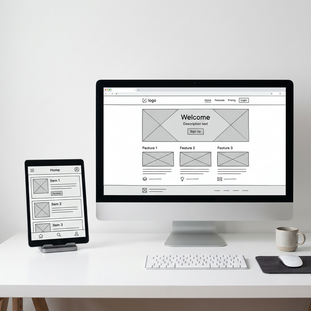
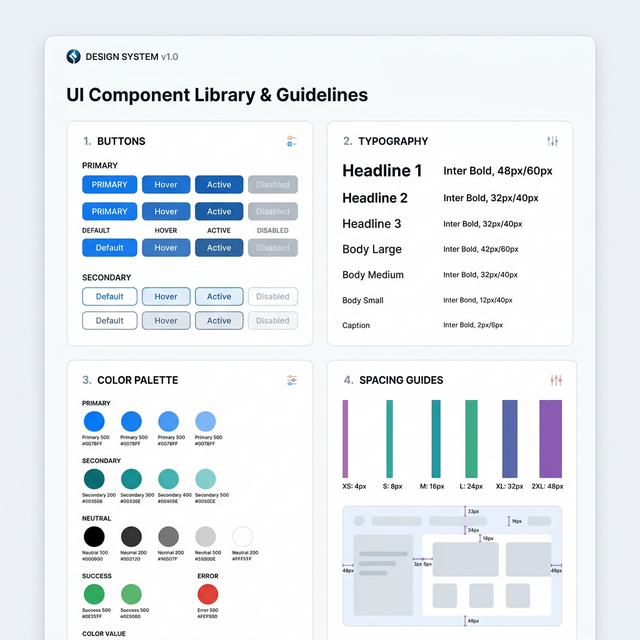
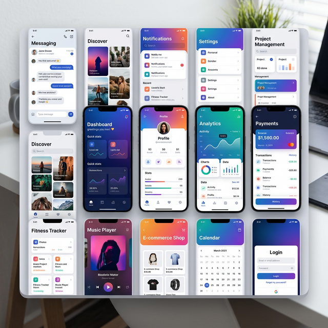
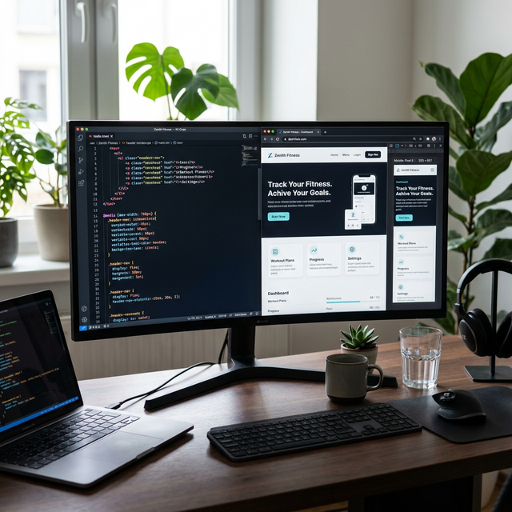
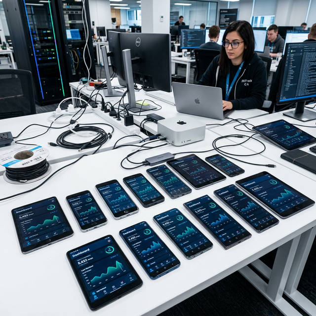

Digital experience for leading authority in Applied Functional Science.
Gray Institute® is the leading authority in Applied Functional Science®, helping over 250,000 movement professionals advance their careers as Go-To Movement Professionals.

Gray Institute® is the leading authority in Applied Functional Science®, helping over 250,000 movement professionals advance their careers as Go-To Movement Professionals. The brand's core vision is to provide valuable information to both professionals and individuals, ultimately enhancing lives.
Offering unique content through various formats like a mobile app, live events, certifications, specializations, mentorship programs, online modules, DVDs, and functional products, Gray Institute® ensures comprehensive learning.
Originally, all GI courses were on a third-party SaaS LMS. Realizing the complexity of GIFT workflows for traditional LMS, the brand developed a custom LMS. However, it lacked adaptability and became outdated. My team introduced a new, scalable LMS aligned with the brand’s vision, designed for a modern experience. Upon GIFT users' adoption, the brand may shift the remaining courses to this new LMS.
Client Vision
- Because the brand collaborated with several vendors for different tech needs, the final outcome was usually disjointed. Trying to coordinate the platforms required a lot of resources and was unreliable due to details being lost in separate briefs.
- GI provided trainers with technology and tools that didn't align well with the course structure. This created a skill barrier for trainers to effectively apply their learning and derive long-term value from the courses.
- Comprehending the course delivery and consumer model for both the GI team and their trainers.
Concept to Launch
1. Research and Discovery
- Engage key stakeholders to understand their experiences with the current LMS and expectations for the new one.
- Identify the specific needs and preferences of movement professionals and individuals engaging with Gray Institute® courses.
- Assess the effectiveness of various content formats offered, considering user preferences and feedback.
- Analyze user adoption patterns and feedback for the new LMS (GIFT) to understand user experiences and satisfaction.
- Research other platforms, identifying best practices, features, and potential gaps for Gray Institute®.
- Map out the user journey, identifying pain points and opportunities for a smoother learning experience.

2. Product Documentation
- Document insights from stakeholder interviews regarding user types and their roles in course delivery and consumption, while defining the product scope.
- Compile a list of tasks each user intends to perform using the product, ensuring the preservation of the nature of delivery and consumption.
- Plan the steps for each user task through the creation of user journeys and user flows, encompassing error and exceptional cases.
- Outline technical specifications and requirements for the product, considering the technology to be employed.
3. Mid-fidelity Design
- Develop mid-fidelity prototypes based on the insights gathered during the research and discovery phase, providing a visual representation of the new LMS design.
- Refine the mid-fidelity design based on feedback from stakeholders and usability testing, ensuring alignment with the project's objectives.

4. Design System
- Define key design principles that will guide the visual and interaction elements of the new LMS, ensuring consistency and a cohesive user experience.
- Develop a comprehensive design component library that includes UI elements, color schemes, typography, and other visual elements, promoting a unified look and feel.

5. High-fidelity Design
- Develop high-fidelity user interface designs that incorporate the refined mid-fidelity prototypes and adhere to the established design principles and component library.
- Add detailed visual elements, such as images, icons, and micro-interactions, to enhance the overall aesthetics and user engagement of the LMS.
- Conduct collaborative review sessions with stakeholders to gather feedback on the high-fidelity designs and make any necessary adjustments before proceeding to development.

6. Development
- Begin front-end development based on the approved high-fidelity designs, translating the visual elements into functional components using appropriate technologies.
- Integrate back-end functionalities, such as user authentication, data storage, and content management, to ensure a seamless and fully functional LMS.
- Employ iterative development cycles, allowing for continuous testing, feedback, and adjustments to enhance the LMS's performance and user experience.

7. QA/UAT
- Conduct thorough functional testing to ensure that all features and functionalities work as intended, identifying and addressing any bugs or issues.
- Perform usability testing with real users to validate the user interface, navigation, and overall user experience, incorporating feedback for further refinements.
- Verify the LMS's compatibility across various devices and browsers, ensuring a consistent and reliable experience for all users.
- Assess the system's performance, scalability, and responsiveness under different conditions, optimizing as needed for efficient and reliable operation.
- Conduct a comprehensive security audit to identify and address potential vulnerabilities, ensuring the protection of user data and system integrity.

My Role
Collaborative Product Designer
Research, Documentation, Visual Design, Prototyping